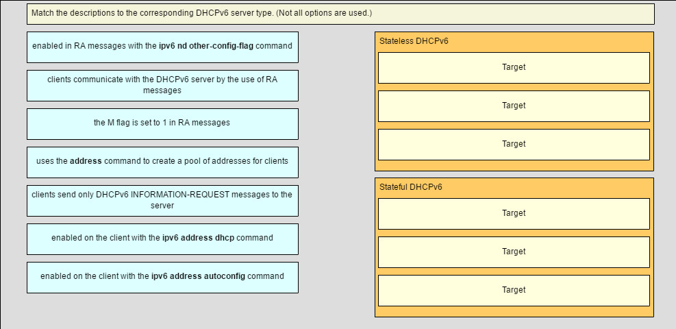

1.¿Qué mensaje DHCPv4 enviará un cliente para aceptar una dirección IPv4 que ofrece un servidor DHCP?
- emisión DHCPREQUEST *
- DHCPACK unicast
- emisión DHCPACK
- unidifusión DHCPREQUEST
- @javi__super
2.Una empresa utiliza servidores DHCP para asignar dinámicamente direcciones IPv4 a las estaciones de trabajo de los empleados. La duración de la concesión de la dirección se establece en 5 días. Un empleado regresa a la oficina después de una ausencia de una semana. Cuando el empleado inicia la estación de trabajo, envía un mensaje para obtener una dirección IP. ¿Qué direcciones de destino de Capa 2 y Capa 3 contendrá el mensaje?
- FF-FF-FF-FF-FF-FF y 255.255.255.255 *
- Direcciones MAC e IPv4 del servidor DHCP
- Dirección MAC del servidor DHCP y 255.255.255.255.
- FF-FF-FF-FF-FF-FF y dirección IPv4 del servidor DHCP
- @javi__super
3.¿Cuál es un método de asignación de direcciones DHCPv4 que asigna direcciones IPv4 para un período de concesión limitado?
- asignación dinámica *
- asignación manual
- asignación previa
- asignación automática
- @javi__super
4.¿A qué dirección se dirige un servidor DHCPv4 cuando se envía un mensaje DHCPOFFER a un cliente que realiza una solicitud de dirección?
- dirección de hardware del cliente *
- dirección IP del cliente
- dirección IP de la puerta de enlace
- dirección MAC de difusión
- @javi__super
5.Dado que la concesión de un cliente DHCPv4 está a punto de caducar, ¿cuál es el mensaje de que el cliente envía el servidor DHCP?
- DHCPREQUEST *
- DHCPDISCOVER
- DHCPOFFER
- DHCPACK
- @javi__super
6.¿Cuál es una ventaja de configurar un enrutador Cisco como un agente de retransmisión?
- Puede proporcionar servicios de retransmisión para múltiples servicios UDP. *
- Puede reenviar mensajes de difusión y multidifusión en nombre de los clientes.
- Reduce el tiempo de respuesta de un servidor DHCP.
- Permitirá que los mensajes DHCPDISCOVER pasen sin alteración.
- @javi__super
7.Un administrador emite los comandos:
Router (config) # interface g0 / 1
Router (config-if) # ip address dhcp
¿Qué está tratando de lograr el administrador?
- configurando el enrutador para obtener parámetros IP de un servidor DHCPv4 *
- configurando el enrutador para que actúe como un servidor DHCPv4
- configurando el enrutador para que actúe como un agente de retransmisión
- configurando el enrutador para resolver conflictos de direcciones IP
- @javi__super
8.¿En qué dos circunstancias se configuraría un enrutador como un cliente DHCPv4? (Escoge dos.)
- El enrutador está diseñado para ser utilizado como puerta de enlace SOHO. *
- El enrutador está destinado a proporcionar direcciones IP a los hosts.
- El administrador necesita que el enrutador actúe como un agente de retransmisión.
- Este es un requisito de ISP. *
- @javi__super
9.Una empresa utiliza el método SLAAC para configurar direcciones IPv6 para las estaciones de trabajo de los empleados. ¿Qué dirección utilizará un cliente como su puerta de enlace predeterminada?
- la dirección de enlace local de la interfaz del enrutador que está conectada a la red *
- la dirección de multidifusión de todos los enrutadores
- la dirección local única de la interfaz del enrutador que está conectada a la red
- la dirección de unidifusión global de la interfaz del enrutador que está conectada a la red
- @javi__super
10.Un administrador de red configura un enrutador para enviar mensajes RA con el indicador M como 0 y el indicador O como 1. ¿Qué afirmación describe el efecto de esta configuración cuando una PC intenta configurar su dirección IPv6?
- Debe usar la información que se encuentra en el mensaje de RA y comunicarse con un servidor DHCPv6 para obtener información adicional *
- Debe ponerse en contacto con un servidor DHCPv6 para obtener toda la información que necesita.
- Debe utilizar la información contenida en el mensaje de RA exclusivamente.
- @javi__super
- Debe ponerse en contacto con un servidor DHCPv6 para obtener el prefijo, la información de longitud del prefijo y una ID de interfaz que sea tanto aleatoria como única.
11.Una empresa implementa el método DHCPv6 sin estado para configurar las direcciones IPv6 en las estaciones de trabajo de los empleados. Después de que una estación de trabajo recibe mensajes de varios servidores DHCPv6 para indicar su disponibilidad para el servicio DHCPv6, ¿qué mensaje envía a un servidor para obtener información de configuración?
- DHCPv6 SOLICITUD DE INFORMACION *
- DHCPv6 PUBLICIDAD
- DHCPv6 SOLICIT
- DHCPv6 SOLICITAR
- @javi__super
12.Un administrador desea configurar los hosts para que se asignen automáticamente direcciones IPv6 mediante el uso de mensajes de anuncio de enrutador, pero también para obtener la dirección del servidor DNS de un servidor DHCPv6. ¿Qué método de asignación de direcciones debe configurarse?
- DHCPv6 sin estado *
- SLAAC
- DHCPv6 con estado
- RA y EUI-64
- @javi__super
13.¿Cómo garantiza un cliente IPv6 que tiene una dirección única después de configurar su dirección IPv6 utilizando el método de asignación SLAAC?
- Envía un mensaje de Solicitud de Vecino ICMPv6 con la dirección IPv6 como la dirección IPv6 de destino. *
- Envía un mensaje ARP con la dirección IPv6 como la dirección IPv6 de destino.
- Comprueba con la base de datos de direcciones IPv6 que está alojada en el servidor SLAAC.
- Se pone en contacto con el servidor DHCPv6 a través de un mensaje ICMPv6 formado especial.
- @javi__super
14.¿Qué se utiliza en el proceso EUI-64 para crear una ID de interfaz IPv6 en una interfaz habilitada para IPv6?
- la dirección MAC de la interfaz habilitada para IPv6 *
- una dirección hexadecimal de 64 bits generada aleatoriamente
- una dirección IPv6 proporcionada por un servidor DHCPv6
- una dirección IPv4 que está configurada en la interfaz
- @javi__super
15.¿Qué dos métodos se pueden usar para generar una ID de interfaz mediante un host IPv6 que utiliza SLAAC? (Escoge dos.)
- EUI-64 *
- generación aleatoria *
- DHCPv6 con estado
- PAPÁ
- @javi__super
16.Consulte la presentación. Según la salida que se muestra, ¿qué tipo de direccionamiento IPv6 se está configurando?

- DHCPv6 sin estado *
- SLAAC
- DHCPv6 con estado
- enlace estático local
- @javi__super
17.¿Cuál es el resultado de un técnico de red que emite el comando ip dhcp excluded-address 10.0.15.1 10.0.15.15 en un enrutador de Cisco?
- El enrutador de Cisco excluirá que 15 direcciones IP sean arrendadas a clientes DHCP. *
- El enrutador de Cisco excluirá solo las direcciones IP 10.0.15.1 y 10.0.15.15 de ser arrendadas a clientes DHCP.
- El enrutador de Cisco creará automáticamente un grupo DHCP utilizando una máscara / 28.
- El enrutador de Cisco permitirá que solo las direcciones IP especificadas se puedan arrendar a los clientes.
- @javi__super
18.Consulte la presentación. ¿Qué se debe hacer para permitir que la PC-A reciba una dirección IPv6 del servidor DHCPv6?
- Agregue el comando ipv6 dhcp relay a la interfaz Fa0 / 0. *
- Configure el comando ipv6 nd managed-config-flag en la interfaz Fa0 / 1.
- Cambie el comando ipv6 nd managed-config-flag a ipv6 nd other-config-flag.
- Agregue la dirección IPv6 2001: DB8: 1234: 5678 :: 10/64 a la configuración de la interfaz del servidor DHCPv6.
- @javi__super
19.Consulte la presentación. Un administrador de red está implementando una operación DHCPv6 con estado para la empresa. Sin embargo, los clientes no están utilizando el prefijo y la información de longitud de prefijo que se configura en el grupo DHCP. El administrador emite un comando show ipv6 interface. ¿Cuál podría ser la causa del problema?
- El enrutador está configurado para el funcionamiento de DHCPv6 sin estado *
- No se configura ninguna dirección local de enlace virtual
- La función Detección de direcciones duplicadas está deshabilitada
- El enrutador está configurado para SLAAC DHCPv6.
- @javi__super
20.Consulte la presentación. Un administrador de red está implementando la operación DHCPv6 sin estado para la empresa. Los clientes están configurando direcciones IPv6 como se espera. Sin embargo, los clientes no obtienen la dirección del servidor DNS y la información de nombre de dominio configurada en el grupo DHCP. ¿Cuál podría ser la causa del problema?
- El enrutador está configurado para la operación de SLAAC *
- La interfaz GigabitEthernet no está activada.
- La dirección del servidor DNS no está en la misma red que los clientes.
- Los clientes no pueden comunicarse con el servidor DHCPv6, evidenciado por la cantidad de clientes activos que son 0
- @javi__super
21.Rellena el espacio en blanco. No abrevie Escriba un comando para excluir las primeras quince direcciones IP utilizables de un grupo de direcciones DHCPv4 de la red 10.0.15.0/24. Router (config) # ip dhcp
- Respuesta correcta:excluida dirección 10.0.15.1 10.0.15.15 *
- @javi__super
22.Ordene los pasos para configurar un enrutador como un servidor DHCPv4. (No se utilizan todas las opciones).
- Pregunta
- Respuesta
- @javi__super
23.Haga coincidir la descripción con el tipo de servidor DHCPv6 correspondiente. (No se utilizan todas las opciones).
- Pregunta 
- Respuesta
- @javi__super